About Me
In Summary
I am a recent graduate from Newcastle University, having completed my master's in mathematics. I am particularly interested in applied mathematics and the crossover between maths and physics. I have completed a number of projects on space, and I love researching topics of active research - like my project studying oceans on Europa and Enceladus. Despite much of my free time being taken up with work and studies, I still find time to engage with my hobbies - taking part in sports, enjoying music, and travelling the world!
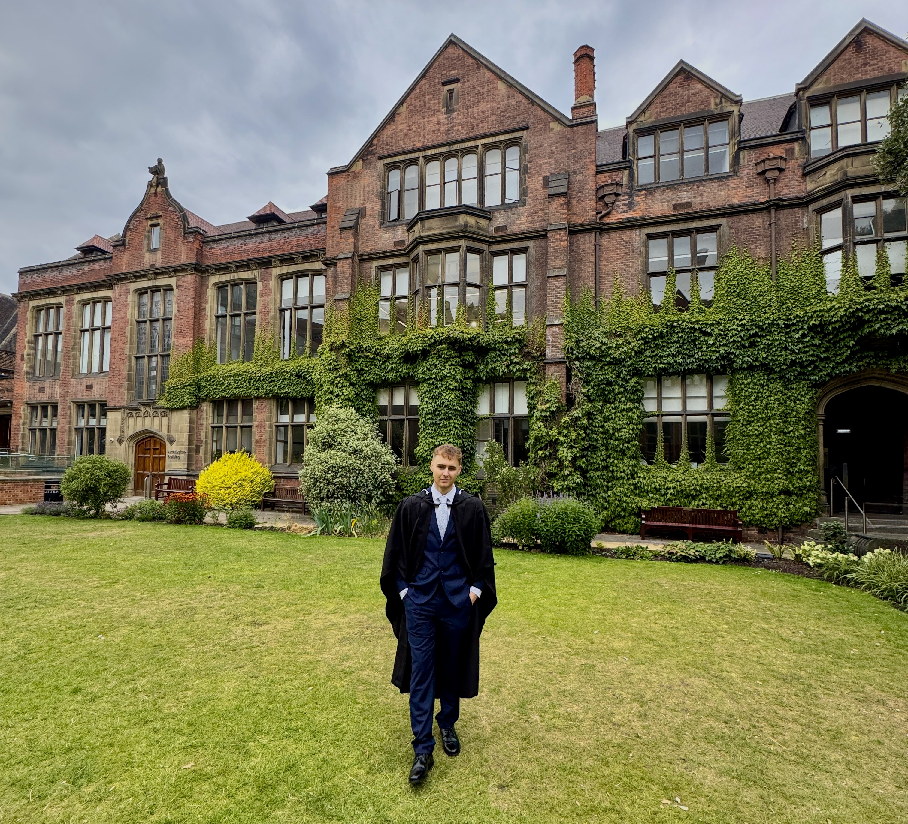
Skills
- Python
- Problem Solving
- HTML/CSS/JavaScript
- Modelling
- Academic Writing
- Data Analysis
- Complex Integrals
- Relativity
- Fluid Mechanics
- Excel
- R Programming
- Complex ODEs/PDEs
- Teamwork
- Leadership
- Time Management
- PowerPoint Presentations
- Statistical Analysis
- Working Under Pressure
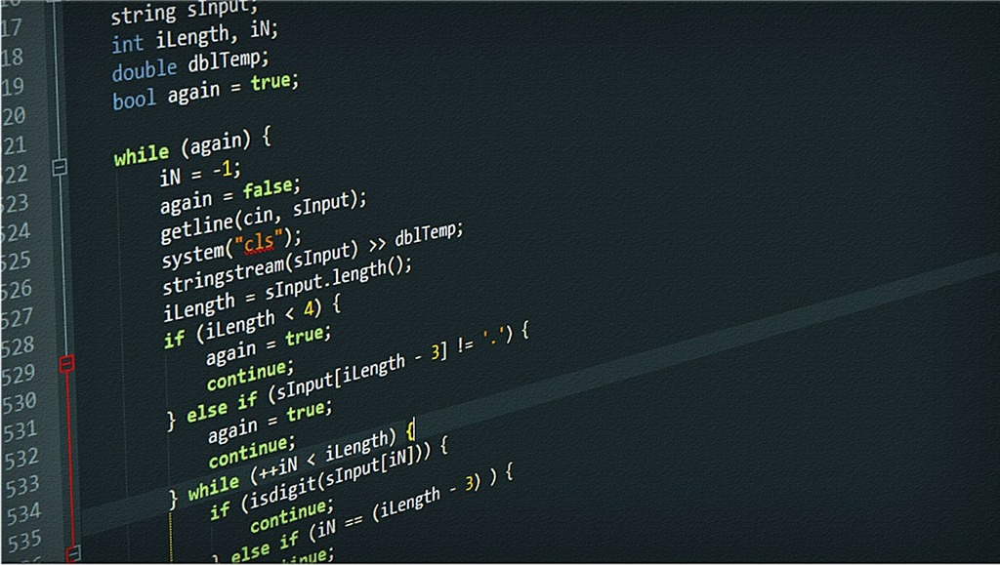
University Studies
Whilst at university I studied a broad range of mathematical
topics. In my first year I built a foundation in key concepts,
studying ODEs and calculus, algebra, and statistics - whilst I
took two business modules, studying accountancy and business
management. The highlight of my first year was learning how to
solve ODEs, equations which are key to many real-world scenarios
and concepts, and I couldn't wait to apply this knowledge to these
real-world applications.
In second year, I began to study more refined concepts and develop
my skills learnt in first year. Since I knew I wanted to specialise
in applied mathematics, many of my module selections were applied.
The two standouts were fluid dynamics and advanced calculus and waves,
and I loved learning how to solve more complex ODEs and use them to
model the behaviour of fluids and some waves. I have always been
interested in modelling fluids (which I eventually based my dissertation
on) and so learning how to model simple 1D and 2D flows was a great
introduction to the world of fluid mechanics. I also got the chance
to study more theoretical concepts like vector spaces, Euclidean algebra,
and the functions of complex numbers, which allowed me to see the interest
in pure mathematics, and understand some of the applications in the real
world. I also continued my statistical studies, working in R to study
complex datasets, studying Bayesian statistics, and building statistical
models using methods like linear regression. Whilst continuing my work in
R, I also took my first Python module, where I learned key concepts and
built the foundations of my advanced skillset today.
Once I got to my third year, the concepts I was studying became very
advanced - and I was able to really specialise in applied mathematics. I
was able to study advanced fluids, using the Navier-Stokes equation to handle
complex flows, whilst also first discovering the world of quantum mechanics.
This module was very analytical and unlike anything I had studied previously,
however at the end of the year I was left fascinated and could not wait to
continue to study the topic in my own time. Some other branches of physics that
I studied were both relativity, learning early concepts which I would apply in my
fourth year, and classical fields, where I learnt how we can study and
simulate electric, magnetic and electromagnetic fields. My favourite module
of the year, however, was PDEs. Here, I was finally able to solve PDEs,
which prove useful when simulating things like waves and traffic flow. This,
alongside my final module on ODEs, completed my studies of differentials,
and left me feeling confident enough to handle even the most complex of
equations. Differential equations are key in the worlds of finance, fluids,
relativity, and astrophysics - all topics I want to continue to study after
university. I was also given the chance to lead a group project on vortices
- more details can be found here (LINK??????)!
In my master's year, I could really focus my studies into the topics I was
most interested in. My two main modules were in general relativity, and
quantum fluids. GR allowed me to study the Einstein equations and spacetime,
key concepts when understanding relativistic concepts - and applying them to
astrophysics and space travel. My other module introduced me to the crazy
world of quantum fluids, learning about their properties, applications, and
most importantly how we can model them and how they interact - achieved using
the Gross-Pitaevskii equation. I was also able to study instabilities,
learning how we model stability and perturbations of real-world systems - such
as pendula, populations, convections, and flows. Some of this was useful in
my final module - mathematical biology. Here I studied population modelling,
and how we can simulate the effects change (perturbations) can have on a
population. However, the highlight of my final year was my dissertation,
studying the effect of climate change on Earth's oceans. I built my own Python
model to simulate how the circulation would change following a freshwater
release at the ice caps. I then used this model to study the subsurface oceans
of the icy moons of Saturn and Jupiter, Enceladus and Europa. My model produced
results in line with NASA data and so allowed me to accurately simulate these
relatively unknown oceans. More detail on this extensive project can be found
here!
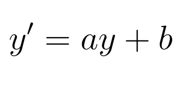
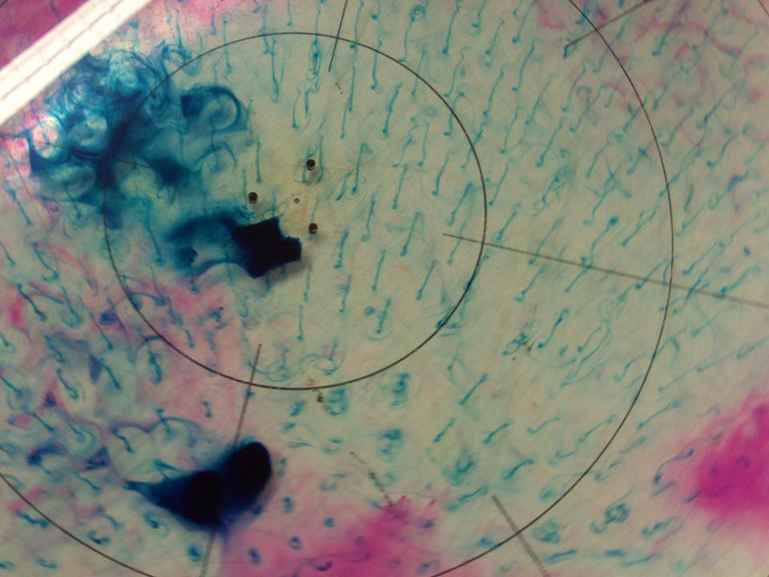
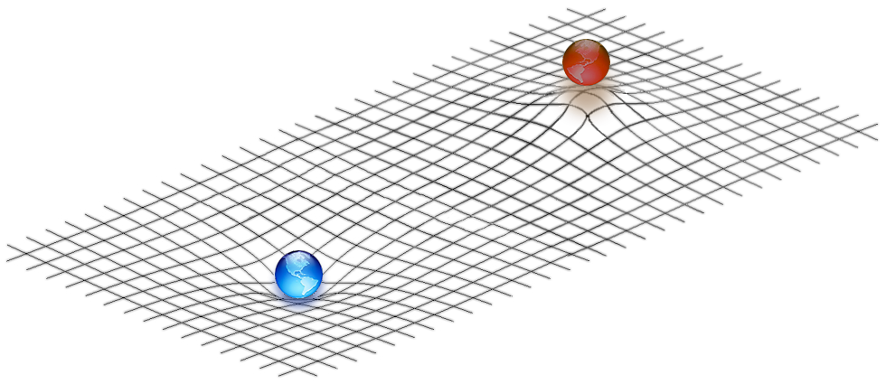
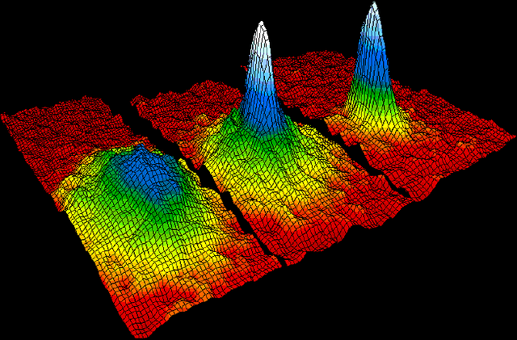
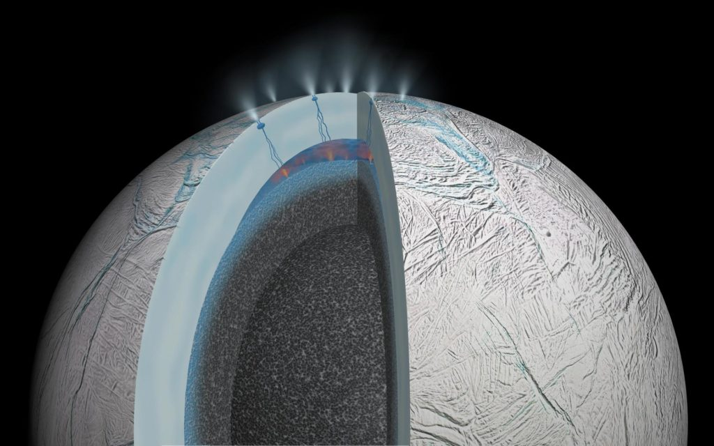
Experience
I have worked several retail jobs, where I have picked up many of my 'soft skills'.
I have both led and been a part of various teams, trained new employees, and worked
closely with high-end clients. I have learnt to work efficiently under pressure and
became more adaptable in my work - prioritising more important tasks for the greater
good.
I have also recently worked with a UK based water company to help them with a recurring
issue regarding on-site work. They have sites across the UK, with many being in remote
locations. These remote sites have proven difficult when sourcing accurate weather data,
and so the company wanted a way to access accurate data to help decide when to complete
works and training exercises on them. I built an app which sources data for a given postcode,
and provides a summary, trends, and a forecast. It provides in depth data on things like
temperature, wind speed and sunlight - all key for things like cement laying, fence repairs,
and outdoor drills. More detail on this project can be found here (LINK??????)!
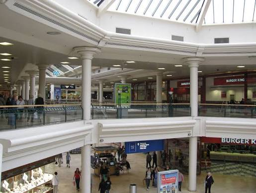
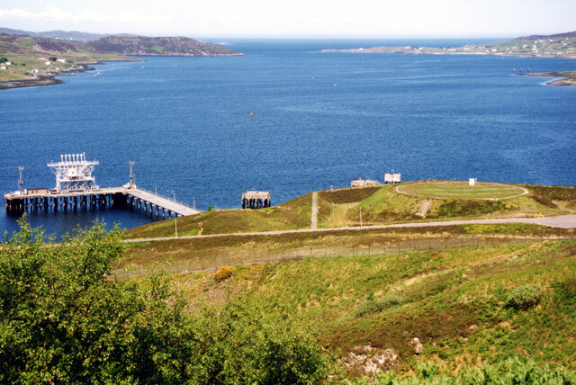
Hobbies
Since a very young age, I have been interested in sports. Football has
always been my favourite team sport, and I love playing and watching
(although I don't have as much time for the latter these days). I enjoy
athletics, in particular track and field, and regularly run in my spare
time. I also like basketball, which I used to play when I was younger, and
I can't wait for the NBA to restart in October (Raps in five!!).
I love travelling and exploring new people and places. I recently visited
Japan for the first time and cannot wait to return. I have visited many
areas of Spain and almost moved to Catalunya recently. These visits helped
me to develop my Spanish, which I have been learning since I started
university. My learning was also accelerated by an advanced Spanish class
taken in my third year, allowing me to practice using the language with
others and achieving an excellent grade for my assessed presentation.
If I have any spare time, I try to read as much as possible - especially
fantasy, science-fiction and educational astrophysics books. I also love
cooking and spending time outdoors, spending a lot of time walking in the
Lake District and Peak District. If I ever get time, I also enjoy playing
videogames - inspiring me to begin building my own Pokémon game (LINK??????).
However, my most passionate hobby is music. I always listen to music, and love
discovering new songs, albums and artists - from all genres and ages. I collect
vinyl and have built an Excel spreadsheet to track my listening history and
reviews - which I hope to build my own app for in future.
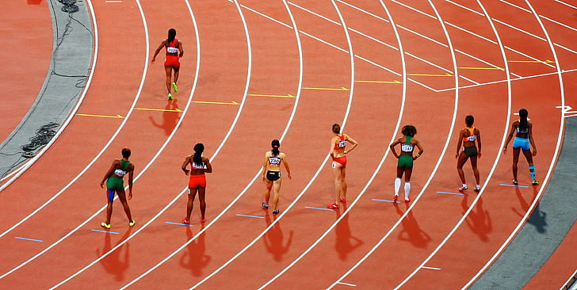
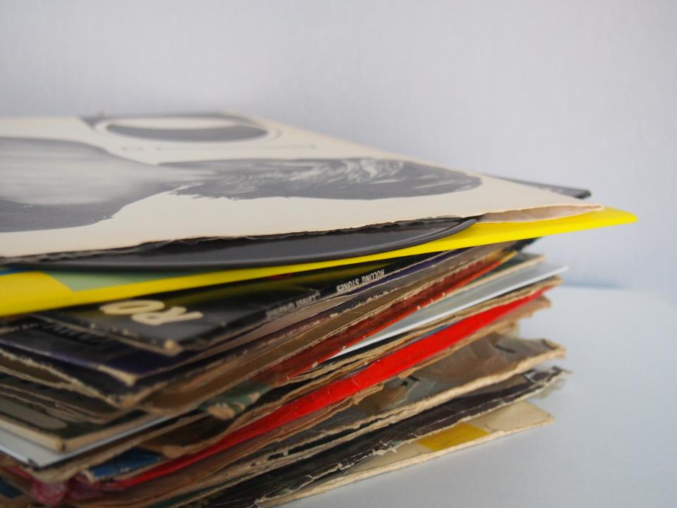
Future
In the future I hope to continue living life to its fullest - travelling the world,
learning new skills, and meeting new people. I hope to continue to work in finance
(potentially moving to Canary Wharf) or even launch a career in the astrophysics
industry.
In the meantime, I will continue working on my own projects, and I am hoping my
atmospheric model will be complete soon. I want to continue my studies of space,
and my next major project will be an exoplanet app. I want to create a large-scale
interactive database using NASA's exoplanet archive, containing stats and facts on all
known exoplanets. The app will be updated for new discoveries, and I hope it can be used
to get the public more excited by our continued research into exoplanets. I also want to
continue my work on extraterrestrial ocean and dark matter. Regarding the former, I wish
to continue to improve the quality of my model - expanding my study to include other oceans
and adding more detail as we discover more about these alien objects. I also wish to
discover more about dark matter and dark energy. So far, I have only completed in depth
research on their discovery and evidence, and so I wish to study some of the theories and
work done since discovery to learn even more.
I am planning a trip to Iceland soon, where I hope to explore the country's beautiful nature
and finally experience the Aurora Borealis. I hope to return to Japan soon and may even
consider moving there soon! Alongside this, I wish to continue my language studies in
Portuguese and Japanese, now that I have a strong grasp of Spanish.
Music is another big passion of mine, and I currently I record all my listens and reviews
in an Excel file. However, I hope that in future I can build my own application to log
albums and songs more conveniently. I have built a basic plan for this idea; however, I hope
that I can begin to formalise the app next year. I also hope I can finish my Pokémon game
next year and may even make it publicly available! I currently have some key mechanics working,
just needing to add detail and more features - as well as some more detailed assets to really
bring the game to life.
The most important thing for me when discussing my future, is that I continue to grow, learn,
and experience the world. I hope I continue to get the opportunity to work on topics I love,
whilst visiting amazing new places and meeting new people!